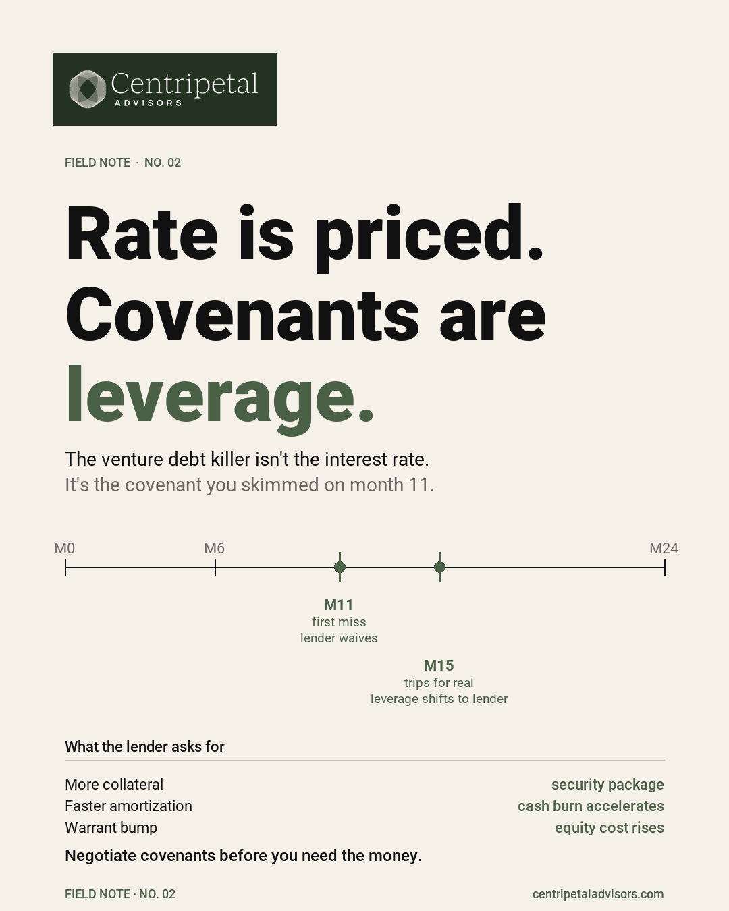

Venture Debt Covenants: What to Stress-Test Before Signing
The interest rate is visible. The covenant is where the relationship can change when the operating plan moves.

Rate is priced. Covenants are leverage.
Founders naturally ask about rate, warrants, and prepayment. Those are visible costs. Covenants determine what happens when the operating plan stops behaving as expected.
A facility can look manageable in the base case and become expensive after one weak quarter. The right review is not adversarial. It is a clear model of how the terms behave when timing, growth, or collections move.
Three terms to stress-test
1. Maintenance floors against the downside case
Test MRR or revenue floors against a conservative operating case, not the plan. If the covenant only works when every hiring, collection, and renewal assumption lands on time, it is not a resilient floor.
2. Minimum cash and lookback windows
Ask how minimum cash is measured, over what period, and what counts as restricted or available. A 60-day lookback can produce a different answer than a 30-day snapshot when collections are lumpy.
3. Waiver versus default economics
Write down what changes after a waiver: security, amortization, reporting, pricing, and warrants. The important question is not whether a lender can waive once. It is what leverage the waiver creates the next time the covenant moves.
Questions to bring into the term-sheet review
- Which operating assumption is most likely to trip the covenant first?
- Does the test use the plan, a trailing period, or a defined downside case?
- What is the exact cure period and what reporting is required during it?
- What changes economically after a waiver?
- How does the debt interact with the next equity round and minimum cash plan?
Frequently asked questions
What should founders stress-test in venture debt covenants?
Maintenance floors against a downside case, minimum-cash measurement windows, and the economic consequences of a waiver versus a default.
Why are covenant waivers important?
A waiver can resolve an immediate miss while changing the lender's leverage for the next negotiation. Understand that path before the facility is needed.
Pressure-test the capital stack.
Pair covenant analysis with a cash-flow model and a clear plan for the next financing decision.
Talk with Centripetal